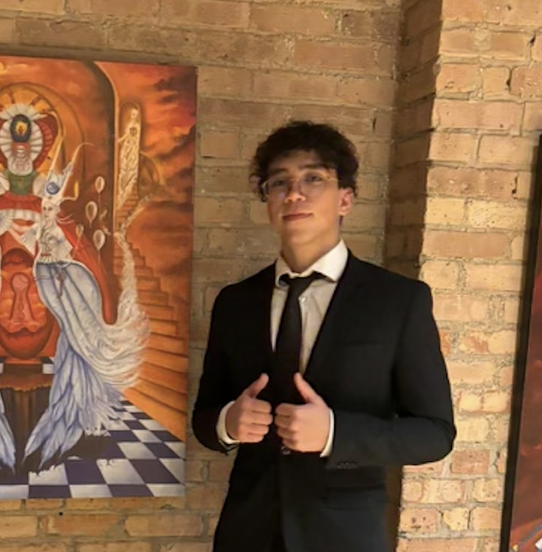

About us
Meet the ACM Officers!

Co-President
Nicholas Vega
Nicholas Vega is a third-year from Florida majoring in Computer Science and Economics. He's currently a member of the Investments team at Lurie Children's Hospital of Chicago, where he focuses on developing and improving machine learning algorithms to optimize the hospital's investment strategies. In his free time, Nick enjoys bouldering, playing squash, and golfing.

Co-President
Charlie Carvajal
Charlie is a third-year double majoring in Computer Science and Astrophysics. This fall he interned as a software developer at a start-up but hopes to work in quantitative finance after graduation. He is currently working as a grader for the Computer Science Department. Some of his hobbies include playing chess, reading, and studying other languages.
Secretary
Natalyah Cadiche
Technical Liaison
Conrad Uyakonwu
Conrad is a second-year from Maryland majoring in computer science and hopefully specializing in Machine Learning. This past summer he interned at Code Your Dreams and is currently employed as a backend developer at TexChange Unbrokered. His hobbies include powerlifting and gaming.
Event Coordinator
Alicia Chun
Alicia is a third-year undergraduate at the University of Chicago pursuing a B.S. in computer science with a specialization human computer interaction and a minor in physics. Her past research experiences include exoplanet imaging, adaptive optics, and asteroseismology. After she graduates from UChicago in June 2025, she plans to enter the industry in systems engineering or optical sciences for a few years before applying to graduate school to pursue a Ph.D. in the Optical Sciences. She is passionate about sustainability and teaching. Outside of computer science and physics, she also loves circus arts, photography, tennis, and circuit projects.
Financial Director
Carlos Carvajal
Carlos is a third-year double majoring in Computer Science and Business Economics. This summer he interned as the assistant coordinator for Summer on the Cuyahoga and is currently interning at TexChange Unbrokered, a startup focused on supply chain, as a software engineer. Some of his hobbies outside of school include calisthenics, reading, and studying current geopolitics.
Marketing Co-Director
Amanada Murphy
Amanda is a third year from Arizona majoring in computer science. This past summer she was in NYC working with a tech startup on UI/UX design. She previously worked in film animation and currently makes documentary films with a lab on campus. In her free time, she enjoys running and playing violin with her chamber group.

Marketing Co-Director
Nathan Quiroa
ML Committee Co-Director
Shubhaankar Gupta
Shubhaankar is a first-year double majoring in Computer Science and Business Economics. He has worked extensively on AI and ML-based projects, and also headed his high school tech club’s ML department. In the past, he worked under researchers at MIT and published research papers on computer vision and machine learning at several international conferences. Shubhaankar collaborated with Intel to develop EcoVolt, a machine-learning model for India's rural electrification and water supply. Outside of tech, he is also interested in geopolitics and international trade, and is currently learning Chinese.
ML Committee Co-Director
Mark Muchane
Mark Muchane is a second-year double majoring in Math and Computer Science. This past summer he interned at Argonne National Labs building AI for science infrastructure. He’s interested in studying ML interpretability and applications to complex problems. Outside of CS they love biking, analog electronics, and getting involved in the community.

SWE Committee Co-Director
Robert Xing
Robert is a second-year from New Orleans majoring in Computer Science. On campus, he works as a research assistant under Professor Yanjing Li as part of YLab, where he conducts experiments aiming to improve optimizations for deep learning models. Outside of CS, he also enjoys studying languages and hopes to travel the world one day. His other hobbies include exploring new music, gaming, and being a tea snob.
SWE Committee Co-Director
Sam Levine
Sam is a third-year from New York studying Computer Science and Economics. Over the summer he worked as a software engineer at Sixfold, a new tech startup in NYC. As a total foodie, he's constantly on the lookout for the city's best eats. When he's not hitting the books or trying new food, you'll find him playing poker or working on jigsaw puzzles.
Machine Learning Committee
About
Current ML Committee Co-Director: Shubhaankar Gupta Current ML Committee Co-Director: Mark MuchaneThe ML Committee is devoted to providing students with any computer science experience the opportunity to develop machine learning knowledge. The machine learning committee starts with intensive, interactive ramp-up workshops throughout the winter quarter. Following the winter quarter, there will be an onboarding project activity. Members will then have access to: • In-person and virtual workshops ranging from basic to advanced ML/Al topics. • Hands-on coding sessions to implement a diverse variety of machine-learning models. • A skilled community open to collaborating on global ML/AI Challenges to apply theoretical knowledge in real-world scenarios • Guest lectures from industry experts and field-defining researchers in computation.
Winter 2023 Schedule
Current/Past Projects
Software Engineering Committee
About
Current SWE Committee Co-Director: Sam Levine Current SWE Committee Co-Director: Robert XingThe SWE Committee prioritizes cultivating essential technical and practical skills for professional development in the field. Activities include interview preparation with a focus on algorithms and data structures, lessons on GitHub and version control, exposure to Agile Development, LeetCode problem-solving, a Basic React Course, Python for Programming Interviews, and exploration of tools such as Pydantic, Python libraries, and Pytest for unit tests. The committee engages in hands-on learning through side projects and collaborates on quarterly group projects, reinforcing skills through practical application during meetings.
Winter 2023 Schedule
Week 4: Shell Basics + Bash Scripting
Week 5: Version Control + GitHub
Week 6: Python Development 101 (Unit Tests with Pytest + Data Modeling with Pydantic)
Week 7: Agile Methodologies + Product Management
Week 8: Software Design Patterns and Architecture
***All SWE meetings will be recorded***
Current/Past Projects
Upcoming events!
UChicago ACM Info Session
We are holding an info session on Wednesday, Janurary 17th at 6:00 PM on Zoom! Join with this link.2024 Chicago Quantum Recruiting Forum
Friday, April 11th, 2024 12:00 pm - 4:00 pm at the John Crerar Library Building. Register through this link.• GET IN TOUCH •
Email: uchicagoacm@gmail.com
Instagram: uchicagoacm